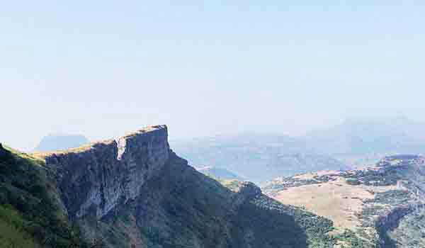

धोडप किल्ला हा महाराष्ट्रातील नाशिकमधील कळवण तालुक्यात वसलेला डोंगर माथ्यावरचा किल्ला आहे. सह्याद्री पर्वतरांगातील दुसरा उंच पर्वतीय किल्ला असल्याने हे ठिकाणी पर्यटकांचे आकर्षण आहे. हे महाराष्ट्रातील तिसरा सर्वोच्च शिखर आहे. गडाचा वरचा भाग विट आणि दगडाने बांधलेला आहे.
अनेकांना अज्ञात असलेला, हा किल्ला उत्तम ट्रेकिंगचा अनुभव देतो. ट्रेकर्ससाठी हे एक आनंददायी आणि ट्रेकरचे नंदनवन आहे. गडाच्या आत हनुमानाची मूर्ती असून गडाच्या पायथ्याशी लेण्या आहेत. ट्रेक आणि कमानदार प्रवेशद्वारावरील अद्वितीय वैशिष्ट्ये आपल्याला भूतकाळात घेऊन जातात.
ऐतिहासिक स्त्रोतांनुसार पेशवे काळात या किल्ल्याची महत्त्वपूर्ण भूमिका होती. याच किल्ल्यात दिंडोरीची ऐतिहासिक लढाई झाली.
जर तुम्ही एखाद्या साहसी महाराष्ट्र सहलीसाठी योजना आखत असाल तर तुमच्यासाठी हे एक चांगले स्थान आहे. गडाव्यतिरिक्त शेकम्बी चट्टान आणि इखारा चट्टान यासारखी इतरही ठिकाणे आहेत. धोडपमधील दृश्ये नेत्रदीपक आहेत. दुसरा सर्वात मोठा किल्ला असल्याने आपणास संपूर्ण प्रदेशाचा पक्ष्याप्रमाणे दृष्टीक्षेप मिळेल.
कसे पोहोचाल:
धोडप किल्ल्याची ट्रेक महाराष्ट्र राज्याच्या नाशिक जिल्ह्यातील हत्ती नावाच्या छोट्या गावातून सुरू होते.
नाशिकपासून ६० किलोमीटर अंतरावर हत्ती गाव आहे.